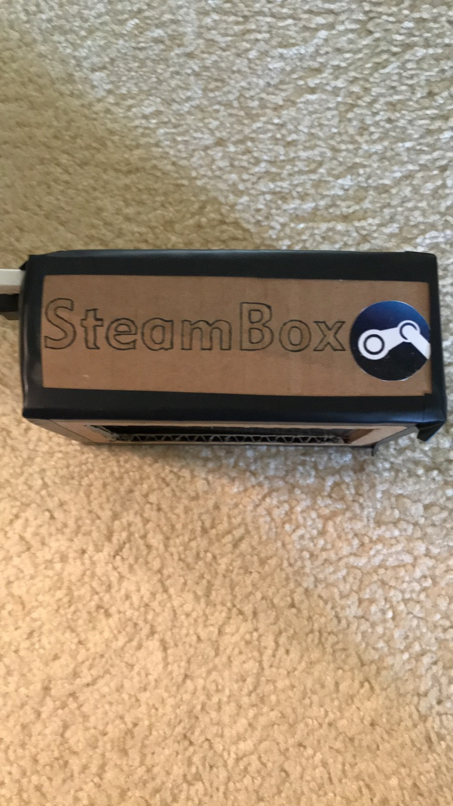
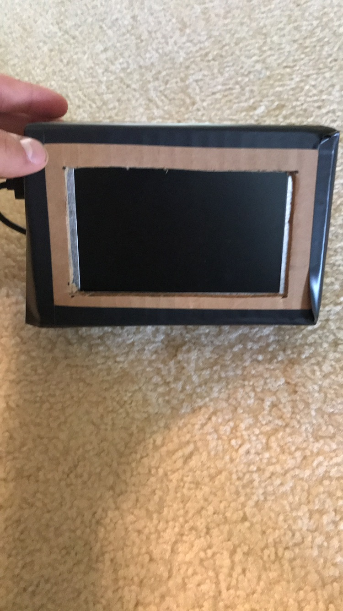

Steam Box
(Final Project)
For my final, I decided to modify a project I had worked on in the past--a Steam machine or as I call it now, a Steam box. I modified my vision from a portable gaming device with built-in controls and a fancy case to a poor-man's gaming device, easily transportable yet built from everyday material such as cardboard. It gave it a unique look as well as an easy-to-replace nature. Here are a few pictures before I describe my process more:


The next step was deciding how I was going to do this. I ended up using raspberry pi, with the default operating system, with steam in console mode instead of desktop mode. I had multiple problems because I was missing a crucial 3.5mm to pigtail wire that my kit did not come with and my screen was also dysfunctional at first. I ended up ordering replacement parts from Amazon and repaired it, getting it somewhat on track. I soldered and wired the speakers to the amp and wired all of those to my power regulator board, connecting to the raspberry pi through the 3.5mm cable I was originally missing. The battery pack was connected to its own board that also ran through this system. That cable was really necessary and I wish I had it earlier. My expectation was not completely met since it is, in reality, a mini computer that I have to use a keyboard and mouse to start up and get to steam and then am finally able to plug in a controller once I boot my game of choice. Also, performance wise, I found that the raspberry pi can handle even less games than I thought. Overall, it was a good experience working with raspberry pi and improvising along the way and I learned a significant amount more about wiring and soldering and basic electronics. Apart from the functionality part, I have my styling. I chose cardboard as my case and secured with electrical tape, partly to avoid sparks from the raspberry pi. I designed the case and cutouts for ports using coreldraw, cut the cardboard using the laser cutter, printed a sticker for my case, soldered and wired the rig together, and set up the raspberry pi. Besides main processes, there was a lot of blade work and tape work on the side. This was a very fun and educational final project.